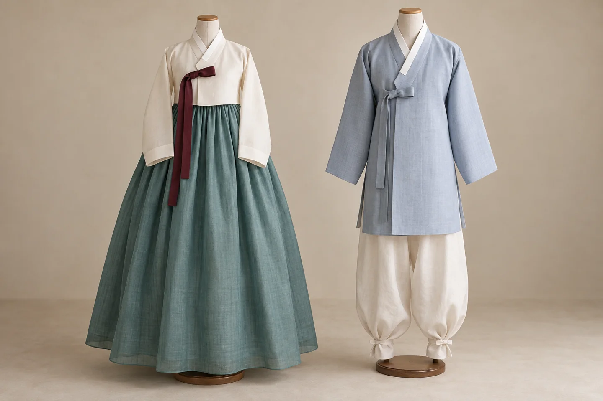
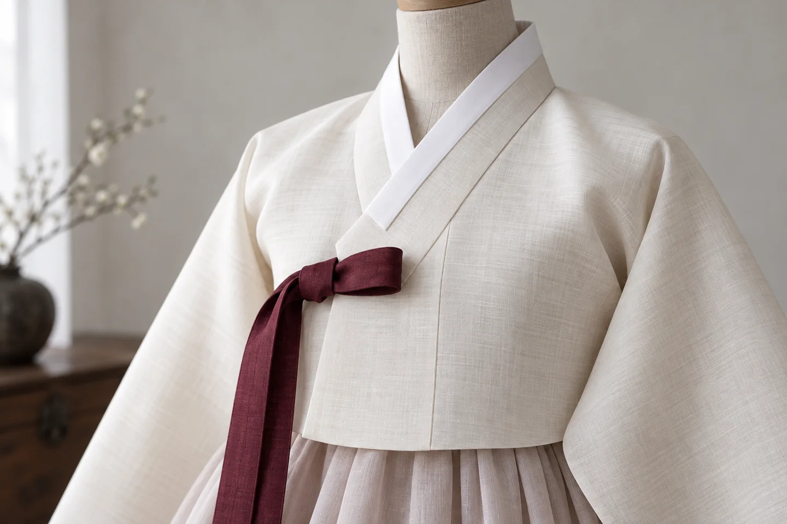
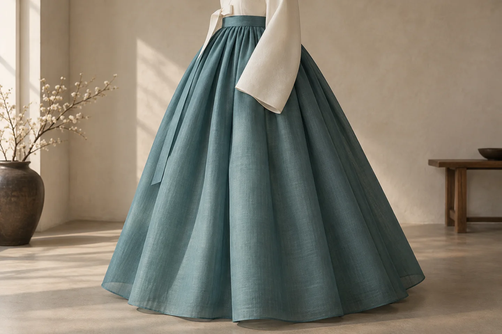
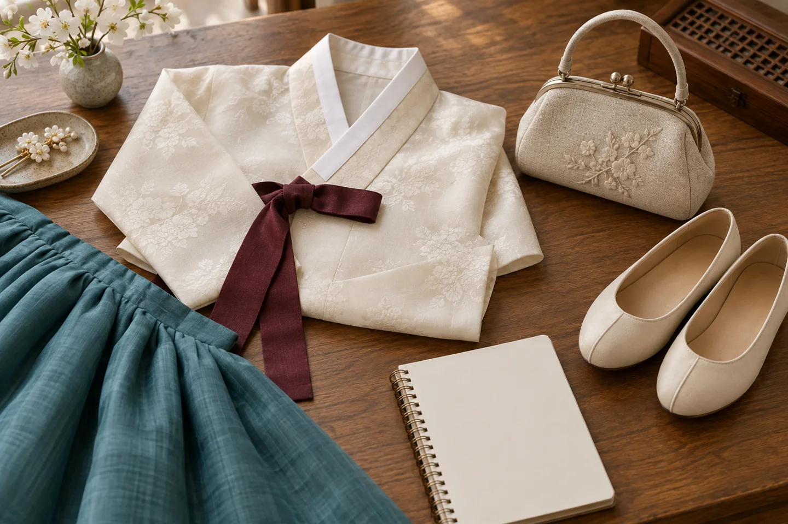

Before choosing a color or a photo spot, take a moment to look at the shape of a hanbok outfit. Notice where the jacket ends, how the fabric falls, and how much space the silhouette leaves around the body. A few familiar garment names can make a fitting more interesting than simply choosing something from a rack.
Start with the basic pieces.

Hanbok is traditional Korean clothing. The jeogori is the jacket; a chima is a skirt, and baji are trousers. Visit Seoul’s introduction describes the short jacket and full skirt commonly associated with women’s hanbok, and the longer jacket and loose trousers associated with men’s styles. Outer garments add other possibilities.
These names are a starting point, not a complete history. Hanbok has changed over time, and contemporary interpretations also exist. One rental outfit should not be treated as a faithful example of every period or occasion.
Look beyond the color.

At a closer distance, a pale collar edge and the jacket’s ribbon ties can become the strongest parts of the composition. In the illustration, the darker ties draw the eye across an otherwise quiet surface. This is a visual observation about the imagined outfit, rather than a claim about the historical meaning of those colors.
When looking at real clothing, compare the material as well as the decoration. Ask the person helping you what the garment is made from and how it should be handled. A close photograph of a sleeve or fold can record something that disappears in a full-length picture.
The outline changes the picture.

Step back again. Here, the broad skirt creates a very different shape from the narrow ribbon above it. Try noticing the outline before the embroidery: where does a straight edge meet a curve, and where does the cloth open into folds?
If you are taking photographs during a fitting, leave room around the outfit instead of cropping every frame tightly. A front view and a gentle side view may show different qualities. Ask before photographing other visitors or staff, and follow the venue’s photography rules.
Plan around the fitting, not only the photo.

Korea Tourism Organization lists hanbok experience programs, but the details depend on the operator. Use its directory to find possible options, then confirm the current arrangements directly. An older program listing is not a promise of today’s price or availability.
Hanbok programs — VISITKOREA ↗
- Ask which sizes and styles are available for your visit.
- Confirm the rental period, return time and what the quoted price includes.
- Check whether you may go outside or must remain in the experience space.
- Ask about footwear, bags, changing facilities and care of the hem.
- Check any destination’s current admission rules separately.
Allow time to get dressed without rushing. Before leaving, ask the attendant to check the fit and explain anything you are unsure about. Choose a manageable outing so that the clothing, the walk and the photographs all have a little breathing room.
Official sources checked October 15, 2026. Garment background draws on Visit Seoul; VISITKOREA provides program leads. Practical suggestions are editorial advice. All four images are AI-generated interpretations, not historical reconstructions, actual products or evidence of a personal visit.